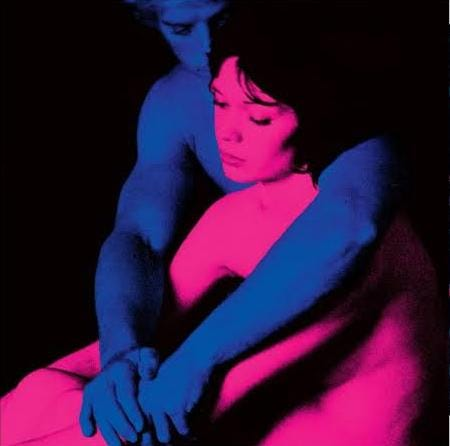

Cigarrettes out the Window
TV Girl
TV Girl
Oi, meu amor,
Criei este site especialmente para você. Quero te agradecer imensamente por ter entrado na minha vida e, em tão pouco tempo, ter mudado tanta coisa. Eu queria te dizer que você alegra muito o meu dia até em coisas tão pequenas mas que ja fazem bastante diferença para mim, seja com vídeos, mensagens, músicas, fotos, call, etc. Eu vejo muitos valores em você e te considero uma pessoa de coração puro. Amo tudo em você, seus olhinhos, seus cabelos, seu estilo, sua personalidade, até os menores detalhes. Me apaixono mais a cada dia, e não importa quanto tempo eu tenha que esperar, no fim, só quero construir muitas coisas boas ao seu lado.
Meu amor, você é o tipo de garota que eu sempre sonhei em ter, e vou sempre dar o meu melhor para que você se sinta bem e cuidada, mesmo nos momentos em que, às vezes, posso estar um pouco distante. Estou escrevendo esta carta enquanto escuto a música "Vem Ser Minha", que foi você quem me fez conhecer. Em todas as músicas românticas, em todos os vídeos românticos, eu sempre me lembro de você. Em todo momento, eu penso em você.
Enfim, estou escrevendo isso no dia 25 de agosto, e este é o primeiro site que dedico a alguém. Provavelmente, ainda esta semana, te pedirei em namoro, porque eu realmente te amo do fundo do meu coração e quero estar ao seu lado para sempre , conquistando muitas coisas juntos e evoluindo juntos cada vez mais. A gente tem tudo para dar certo, basta manter o esforço de ambos os lados, assim como temos feito desde o começo.
Ainda tenho muitas coisas para te dizer, mas deixarei para as futuras cartas. Eu te amo muito.
Assinado: seu futuro namorado
Clique aqui!